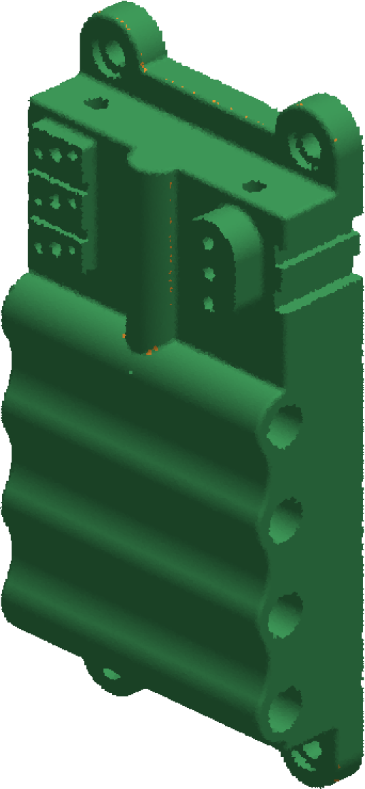

NIST FTC-10 (ASME Y14.5 test case), native scale, AL6061
The NIST FTC-10 test part was cut, in simulation, by a program the agent wrote: 99.89% of its surface ends within a tenth of a millimetre of the drawing. What is not finished is extra metal: at most 1.24 mm, the largest area being 13.21 mm² on the conical bottom of a drilled hole (drill point). It comes off the block on 2 tabs about 2.6 mm wide, which the operator snaps off and files flush.

The simulated part, coloured by result (green = within ±0.1 mm)
Material
AL6061 billet
Stock
37 × 81 × 195.5 mm
Workholding
5-axis vise · 12 mm grip · 24 mm stub gap
Cycle time (simulated)
118 min+25 min in iteration 9: Post-review revision 1: explicit G0 retract along the tool axis before…
Setups
8 · 5 orientations
Tolerance
±0.1 mm
Programmed by
LLM agent (Claude Code subagent)
Date
2026-11-21 01:22
Iterations
10 · final = #10
VALID0 errors · 4 warnings
99.89%
of the whole part surface within ±0.1 mm · trusted final evaluation of iteration 10
proud (failed) 0.11%gouged (failed) 0.00%
Left out of the score: only the tab witness (0.16%). The edge band (0.85%) is scored by its neighbours.
✓ Part-off OK · 2 tabs, 22.88 mm², ≤ 2.6 mm wide✓ Rigidity OK · min 100%✓ Vise clear✓ Harness verified · git 4557aec✓ MillBill cross-check 100.000%
The program is valid: no crash, no vise or table contact, the part stays rigid until the part-off, and the part-off leaves only small tabs. 99.89% of the whole part surface is within ±0.1 mm. Everything else counts as failed: 0.11% is proud (material left) and 0.00% is gouged. The only area not scored is the tab witness (0.16%); the 0.03 mm band along face edges (0.85%) is scored with the deviation of the nearest interior point. Held in one vise by 12 mm of extra stock below a 24 mm stub gap, it is machined in 8 setups (5 table orientations, about 118 min); the part-off at the end leaves 2 tabs (22.88 mm²) for the operator to break off and file flush. Warnings: 65,676 moves are flagged as "rubbing" (feed per tooth below 0.2× the recommended chip load, tools T11, T12, T3, T4). The checker computes the chip load at the tool centre, which under-reads helical and edge-compensated moves whose feed is programmed for the wall, so many of these are an artefact of the check; they are listed under Problems, not hidden. Biggest problems: the conical bottom of a drilled hole (drill point), facing up: proud 13.21 mm² (worst +1.24 mm; a pass (line 6988, T11) touches the edge of this area but +0.54 mm is left on average: the pass stops short of it, the tool cannot form this shape, or the feature was not machined); a blended / fillet surface and a curved wall (radius 6 mm: a hole, bore or round), on a side: proud 2.72 mm² (worst +0.15 mm; passes reach the area (line 79200, T6) but leave +0.12 mm on average: stepover / scallop, the tool radius, or a stop short); a small rounded edge or fillet (radius 1 mm) and a blended / fillet surface, on the underside: proud 2.72 mm² (worst +0.33 mm; passes reach the area (line 110521, T14) but leave +0.18 mm on average: stepover / scallop, the tool radius, or a stop short).
Cutting simulation
Machine view (default): the spindle stays vertical and the table moves the work. To reach each side of the part
the cradle tilts (A axis) and the platter turns (C axis), carrying the vise, the stock and the part. Press play, or click a setup
in the strip under the timeline. Part view: the part stays still and the tool comes in along each setup's axis. The material
is the stock cut by every move, replayed in the browser with the simulator's kernel. Drag to orbit, right-drag or two fingers to pan,
wheel or pinch to zoom (after a click).
How the Machine view works
The machine is a trunnion (table-table) 5-axis mill. The spindle always points straight down and only moves in X, Y and Z.
The A axis tilts the cradle about the machine X axis; the C axis turns the round platter on the cradle; the vise,
the stock and the part sit on the platter and move with it. For each setup the table angles come from the program's
G68.2 tool axis d (in G54 coordinates, from the tool tip towards the holder): A is the tilt of d from vertical
and C its direction around Z (C = 0 when A = 0), the same angles the simulator reports. The table rotation is
R = Rx(A)·Rz(90° − C), which turns d exactly to vertical, under the spindle. Because the A axis lies along machine X,
the platter sits at 90° when A = C = 0, so the part looks turned a quarter turn compared with the Part view. Between setups the
spindle retracts, the table swings (the platter takes the short way round) and the tool comes back down.
The readout shows the tool tip in machine coordinates relative to the rotary centre (where the A and C axes cross), the table
angles A and C, the tool and the current G-code line. In Part view the part stays still and the tool comes in along each setup's
axis instead. Both views replay the same simulated cutting; a self-check in the page confirms that the tool tip relative to the
part is identical in the two views for hundreds of moves of every setup and that the spindle stays vertical.
Loading 3D viewer…
Final result
The target part coloured by how far the simulated part is from it, over the whole surface. Green is within ±0.1 mm;
anything that is not green is a failure (orange to dark red: material left; blue: cut too deep). Purple marks the tab witness, the
small areas where a part-off tab joins the part. Click a marker, a region in the Problems table or the surface itself to see why it failed.
Loading…
The same deviation in six flat views (top, bottom, front, back, left, right): small failures inside holes and on the underside are easier to spot here. Open full size or scroll sideways.
Holding and part-off
The part is machined out of a block held by its bottom in one vise. It must stay connected to the gripped
stub by at least 30% of the stock section until the (PART-OFF) section (line ),
which must machine the underside and leave only small tabs that the operator can break by hand and file flush.
part-off OK 2 tabs, 22.88 mm² in total, widest 2.6 mm.
Tab
Section mm²
Width mm
Centre X, Y, Z (G54)
Tab 1
11.44
2.6
12, -28.5, -5.7
Tab 2
11.44
2.6
12, 28.5, -5.7
2 tabs
22.88
max 2.6
Checked at every height between the stub and the part, the tabs are at most 2.6 mm wide (widest at Z -5.7 mm). Tab witness (part surface within 1 mm of where a tab joins the part): 76.33 mm² = 0.16% of the surface. Only this area is left out of the score (tab witness excluded 0.16%); the edge band is scored by its neighbours.
Limits: total 2–30 mm² and at most 15% of the stub section, each tab at most 3 mm across, at most 4 tabs, witness at most 1.5% of the surface (review target 2–4 tabs, 20–30 mm², witness ≤ 0.5%).
Loading the 3D close-up…
The simulated part after the part-off, seen from the side at the height of the tabs (aluminium = remaining material; the part above, the gripped stub below). Drag to turn, pick a tab with the buttons.Simulator plot of the part-off (underside probe map, per-tab zooms, material section)From the evaluation's probe data. Open the image for full size.
Rigidity through the program
before the part-off (must stay ≥ 30%)part-off section (must end ≤ 15% and ≥ 2 mm²)violates a limit
0%15%30%50%100%
x: setup number; y: weakest material cross-section across the stub gap as a share of the stock section (2997 mm²). Dashed lines: 30% rigidity minimum, 15% part-off maximum.
After setup 1 at Z -23.7 mm: 2997 mm² (100%)After setup 7 at Z -7.97 mm: 627.75 mm² (21%) · 1 piece · part-offAfter the part-off, at Z -5.7 mm: 22.88 mm² in 2 tabs (the part-off analysis; its 7-plane rigidity scan found 22.5 mm² at Z -4.03, which includes material not connected to the part)
Seen from above, X -18.5…18.5 mm left to right, Y up. Filled = material in the plane. Each section is drawn at the plane its caption names (the weakest plane of that check). Only setups that changed the section are shown.
Problems
Click a line number to jump the G-code listing and the animation there; click a region to locate it in the result view.
Out-of-tolerance regions 62
The table lists the 62 largest connected regions (53.4 mm²). The other 0.1 mm² of the 53.4 mm² out of tolerance is in smaller patches, shown in the 3D view and the six-view map.
Region
Type
Area mm²
Worst mm
Faces
Where (bounding box, mm)
Why it failed
proud
13.21
+1.236
face 174 (cone)
normal (-0, -0.01, 1)
X -1.1…2.2 · Y 23.2…26.7 · Z 105.0…106.0
the conical bottom of a drilled hole (drill point), facing up
failed: a pass (line 6988, T11) touches the edge of this area but +0.54 mm is left on average: the pass stops short of it, the tool cannot form this shape, or the feature was not machined; the harness's quick reach search found no tool for 91% of it (smallest tools, 26 cube directions + feature axes); the search is coarse, so try another direction, a longer or smaller library tool, or a different fixture orientation (the area is scored either way)
nearest passes
proud
2.72
+0.150
face 183 (bspline), face 94 (cylinder r6)
normal (-0.83, -0.44, 0.34)
X -12.9…-11.6 · Y -4.5…-2.9 · Z 99.0…100.5
a blended / fillet surface and a curved wall (radius 6 mm: a hole, bore or round), on a side
failed: passes reach the area (line 79200, T6) but leave +0.12 mm on average: stepover / scallop, the tool radius, or a stop short
nearest passes
proud
2.72
+0.328
face 34 (cylinder r1), face 32 (torus), face 36 (torus)
normal (-0.16, 0.47, -0.87)
X 8.2…8.5 · Y -19.7…-14.6 · Z 7.1…9.0
a small rounded edge or fillet (radius 1 mm) and a blended / fillet surface, on the underside
failed: passes reach the area (line 110521, T14) but leave +0.18 mm on average: stepover / scallop, the tool radius, or a stop short
nearest passes
proud
2.33
+0.320
face 128 (cylinder r9), face 40 (torus)
normal (-0.1, -0.25, -0.96)
X 8.2…8.9 · Y 25.2…27.4 · Z 0.1…0.6
a curved wall (radius 9 mm: a hole, bore or round) and a blended / fillet surface, on the underside
failed: passes reach the area (line 108525, T14) but leave +0.19 mm on average: stepover / scallop, the tool radius, or a stop short; underside: finish it before the tabs, from the side (flank of a horizontal tool tangent to the face) or with a tilted setup
nearest passes
proud
2.14
+0.343
face 40 (torus), face 33 (torus), face 34 (cylinder r1)
normal (-0.11, -0.7, -0.71)
X 8.3…8.5 · Y 17.7…20.1 · Z 5.6…9.0
a blended / fillet surface, on the underside
failed: passes reach the area (line 110581, T14) but leave +0.20 mm on average: stepover / scallop, the tool radius, or a stop short
nearest passes
proud
1.94
+0.157
face 34 (cylinder r1)
normal (-0.1, -0, -0.99)
X 8.3…8.5 · Y 10.3…13.5 · Z 9.0…9.0
a small rounded edge or fillet (radius 1 mm), on the underside
failed: passes reach the area (line 110583, T14) but leave +0.14 mm on average: stepover / scallop, the tool radius, or a stop short
nearest passes
proud
1.75
+0.194
face 109 (cylinder r9), face 36 (torus)
normal (-0.06, -0.2, -0.98)
X 8.1…8.9 · Y -31.2…-29.8 · Z 0.1…0.4
a curved wall (radius 9 mm: a hole, bore or round) and a blended / fillet surface, on the underside
failed: passes reach the area (line 108615, T14) but leave +0.16 mm on average: stepover / scallop, the tool radius, or a stop short; underside: finish it before the tabs, from the side (flank of a horizontal tool tangent to the face) or with a tilted setup
nearest passes
proud
1.55
+0.304
face 109 (cylinder r9)
normal (0, -0.21, -0.98)
X 14.9…15.4 · Y -31.1…-29.9 · Z 0.1…0.4
a curved wall (radius 9 mm: a hole, bore or round), on the underside
failed: passes reach the area (line 100399, T1) but leave +0.20 mm on average: stepover / scallop, the tool radius, or a stop short; underside: finish it before the tabs, from the side (flank of a horizontal tool tangent to the face) or with a tilted setup
nearest passes
proud
1.36
+0.182
face 61 (torus), face 66 (torus)
normal (-0.28, -0.77, 0.57)
X 8.2…8.4 · Y 18.6…20.0 · Z 148.9…151.9
a blended / fillet surface, on a side
failed: passes reach the area (line 88324, T14) but leave +0.13 mm on average: stepover / scallop, the tool radius, or a stop short
nearest passes
proud
1.17
+0.269
face 36 (torus), face 109 (cylinder r9)
normal (-0.2, 0.24, -0.95)
X 8.0…8.7 · Y -27.8…-25.6 · Z 0.1…0.5
a blended / fillet surface and a curved wall (radius 9 mm: a hole, bore or round), on the underside
failed: passes reach the area (line 108510, T14) but leave +0.20 mm on average: stepover / scallop, the tool radius, or a stop short; underside: finish it before the tabs, from the side (flank of a horizontal tool tangent to the face) or with a tilted setup
nearest passes
Show 52 smaller regions
Region
Type
Area mm²
Worst mm
Faces
Where (bounding box, mm)
Why it failed
proud
0.97
+0.180
face 183 (bspline)
normal (-0.76, 0.33, 0.55)
X -12.4…-11.7 · Y 3.4…5.0 · Z 99.7…100.1
a blended / fillet surface, on a side
failed: passes reach the area (line 78055, T6) but leave +0.14 mm on average: stepover / scallop, the tool radius, or a stop short
nearest passes
proud
0.97
+0.152
face 36 (torus)
normal (-0.06, -0.83, -0.56)
X 8.4…8.5 · Y -36.5…-34.5 · Z 2.3…4.9
a blended / fillet surface, on a side
failed: passes reach the area (line 109845, T14) but leave +0.13 mm on average: stepover / scallop, the tool radius, or a stop short
nearest passes
proud
0.97
+0.155
face 34 (cylinder r1)
normal (-0.13, -0, -0.99)
X 8.3…8.5 · Y 1.9…4.2 · Z 9.0…9.0
a small rounded edge or fillet (radius 1 mm), on the underside
failed: passes reach the area (line 110583, T14) but leave +0.13 mm on average: stepover / scallop, the tool radius, or a stop short
nearest passes
proud
0.78
+0.109
face 94 (cylinder r6)
normal (-0.26, 0.96, -0)
X -9.1…-9.1 · Y 5.8…5.8 · Z 113.9…116.6
a curved wall (radius 6 mm: a hole, bore or round), on a side
failed: passes reach the area (line 77542, T6) but leave +0.10 mm on average: stepover / scallop, the tool radius, or a stop short
nearest passes
proud
0.78
+0.138
face 71 (cylinder r1)
normal (-0.06, -0, 1)
X 8.4…8.5 · Y -3.2…-0.9 · Z 149.0…149.0
a small rounded edge or fillet (radius 1 mm), facing up
failed: passes reach the area (line 15599, T1) but leave +0.12 mm on average: stepover / scallop, the tool radius, or a stop short
nearest passes
proud
0.78
+0.124
face 71 (cylinder r1), face 129 (plane)
normal (-0.06, -0, 1)
X 8.4…8.5 · Y 10.4…12.4 · Z 149.0…149.0
a small rounded edge or fillet (radius 1 mm) and a flat face, facing up
failed: passes reach the area (line 15628, T1) but leave +0.12 mm on average: stepover / scallop, the tool radius, or a stop short
nearest passes
proud
0.78
+0.135
face 40 (torus), face 128 (cylinder r9)
normal (-0.07, -0.65, -0.76)
X 8.4…8.5 · Y 22.2…23.2 · Z 1.7…2.5
a blended / fillet surface and a curved wall (radius 9 mm: a hole, bore or round), on the underside
failed: passes reach the area (line 109211, T14) but leave +0.13 mm on average: stepover / scallop, the tool radius, or a stop short
nearest passes
proud
0.78
+0.161
face 66 (torus)
normal (-0.11, 0.81, 0.57)
X 8.3…8.5 · Y 34.3…36.8 · Z 152.4…155.9
a blended / fillet surface, on a side
failed: passes reach the area (line 15791, T1) but leave +0.14 mm on average: stepover / scallop, the tool radius, or a stop short
nearest passes
proud
0.78
+0.322
face 128 (cylinder r9)
normal (0, -0.25, -0.97)
X 15.1…15.2 · Y 25.9…26.8 · Z 0.2…0.4
a curved wall (radius 9 mm: a hole, bore or round), on the underside
failed: no pass reached this; nearest pass line 123579 (T3, frame 8) missed by 0.064 mm; underside: finish it before the tabs, from the side (flank of a horizontal tool tangent to the face) or with a tilted setup
nearest passes
proud
0.58
+0.105
face 94 (cylinder r6)
normal (-0.26, -0.96, -0)
X -9.1…-9.1 · Y -5.8…-5.8 · Z 123.3…125.9
a curved wall (radius 6 mm: a hole, bore or round), on a side
failed: passes reach the area (line 79935, T6) but leave +0.10 mm on average: stepover / scallop, the tool radius, or a stop short
nearest passes
proud
0.58
+0.107
face 94 (cylinder r6)
normal (-0.26, 0.97, -0)
X -9.1…-9.1 · Y 5.8…5.8 · Z 121.5…122.9
a curved wall (radius 6 mm: a hole, bore or round), on a side
failed: passes reach the area (line 77542, T6) but leave +0.10 mm on average: stepover / scallop, the tool radius, or a stop short
nearest passes
proud
0.58
+0.121
face 59 (torus)
normal (-0.38, 0.27, 0.89)
X 8.0…8.3 · Y -19.3…-18.6 · Z 148.9…149.2
a blended / fillet surface, facing up
failed: passes reach the area (line 88329, T14) but leave +0.12 mm on average: stepover / scallop, the tool radius, or a stop short
nearest passes
proud
0.58
+0.141
face 36 (torus), face 109 (cylinder r9)
normal (-0.04, -0.99, -0.16)
X 8.4…8.5 · Y -37.4…-37.3 · Z 7.2…7.7
a blended / fillet surface and a curved wall (radius 9 mm: a hole, bore or round), on a side
failed: passes reach the area (line 90594, T1) but leave +0.12 mm on average: stepover / scallop, the tool radius, or a stop short
nearest passes
proud
0.58
+0.144
face 64 (torus)
normal (-0.08, 0.81, 0.59)
X 8.4…8.5 · Y -21.5…-20.9 · Z 153.8…154.6
a blended / fillet surface, on a side
failed: passes reach the area (line 15549, T1) but leave +0.13 mm on average: stepover / scallop, the tool radius, or a stop short
nearest passes
proud
0.58
+0.131
face 71 (cylinder r1)
normal (-0.06, -0, 1)
X 8.4…8.4 · Y -15.3…-13.5 · Z 149.0…149.0
a small rounded edge or fillet (radius 1 mm), facing up
failed: passes reach the area (line 88385, T14) but leave +0.12 mm on average: stepover / scallop, the tool radius, or a stop short
nearest passes
proud
0.58
+0.153
face 34 (cylinder r1)
normal (-0.04, 0, -1)
X 8.4…8.5 · Y -5.2…-5.0 · Z 9.0…9.0
a small rounded edge or fillet (radius 1 mm), on the underside
failed: passes reach the area (line 110524, T14) but leave +0.15 mm on average: stepover / scallop, the tool radius, or a stop short
nearest passes
proud
0.58
+0.154
face 40 (torus)
normal (-0.11, 0.53, -0.84)
X 8.3…8.4 · Y 32.2…34.4 · Z 0.8…2.2
a blended / fillet surface, on the underside
failed: passes reach the area (line 108699, T14) but leave +0.13 mm on average: stepover / scallop, the tool radius, or a stop short; underside: finish it before the tabs, from the side (flank of a horizontal tool tangent to the face) or with a tilted setup
nearest passes
proud
0.58
+0.289
face 128 (cylinder r9)
normal (0, 0.28, -0.96)
X 14.6…15.1 · Y 30.7…31.2 · Z 0.3…0.4
a curved wall (radius 9 mm: a hole, bore or round), on the underside
failed: passes reach the area (line 123454, T3) but leave +0.23 mm on average: stepover / scallop, the tool radius, or a stop short; underside: finish it before the tabs, from the side (flank of a horizontal tool tangent to the face) or with a tilted setup
nearest passes
proud
0.58
+0.258
face 109 (cylinder r9)
normal (0, 0.19, -0.98)
X 15.2…15.3 · Y -27.1…-26.4 · Z 0.1…0.2
a curved wall (radius 9 mm: a hole, bore or round), on the underside
failed: no pass reached this; nearest pass line 125027 (T1, frame 8) missed by 0.054 mm; underside: finish it before the tabs, from the side (flank of a horizontal tool tangent to the face) or with a tilted setup
nearest passes
proud
0.39
+0.106
face 94 (cylinder r6)
normal (-0.26, -0.97, -0)
X -9.1…-9.1 · Y -5.8…-5.8 · Z 113.1…113.9
a curved wall (radius 6 mm: a hole, bore or round), on a side
failed: passes reach the area (line 79935, T6) but leave +0.10 mm on average: stepover / scallop, the tool radius, or a stop short
nearest passes
proud
0.39
+0.102
face 94 (cylinder r6)
normal (-0.27, -0.96, -0)
X -9.1…-9.1 · Y -5.8…-5.8 · Z 117.5…117.8
a curved wall (radius 6 mm: a hole, bore or round), on a side
failed: passes reach the area (line 79935, T6) but leave +0.10 mm on average: stepover / scallop, the tool radius, or a stop short
nearest passes
proud
0.39
+0.106
face 94 (cylinder r6)
normal (-0.26, -0.97, -0)
X -9.1…-9.0 · Y -5.8…-5.8 · Z 120.3…121.3
a curved wall (radius 6 mm: a hole, bore or round), on a side
failed: passes reach the area (line 79935, T6) but leave +0.10 mm on average: stepover / scallop, the tool radius, or a stop short
nearest passes
proud
0.39
+0.109
face 94 (cylinder r6)
normal (-0.25, -0.97, -0)
X -9.1…-9.1 · Y -5.8…-5.8 · Z 129.2…129.9
a curved wall (radius 6 mm: a hole, bore or round), on a side
failed: passes reach the area (line 79935, T6) but leave +0.11 mm on average: stepover / scallop, the tool radius, or a stop short
nearest passes
proud
0.39
+0.106
face 94 (cylinder r6)
normal (-0.26, -0.96, -0)
X -9.1…-9.1 · Y -5.8…-5.8 · Z 137.4…138.2
a curved wall (radius 6 mm: a hole, bore or round), on a side
failed: passes reach the area (line 79935, T6) but leave +0.10 mm on average: stepover / scallop, the tool radius, or a stop short
nearest passes
proud
0.39
+0.109
face 94 (cylinder r6)
normal (-0.26, 0.97, -0)
X -9.1…-9.1 · Y 5.8…5.8 · Z 110.2…111.2
a curved wall (radius 6 mm: a hole, bore or round), on a side
failed: passes reach the area (line 77542, T6) but leave +0.11 mm on average: stepover / scallop, the tool radius, or a stop short
nearest passes
proud
0.39
+0.116
face 64 (torus)
normal (-0.1, 0.39, 0.92)
X 8.4…8.4 · Y -25.3…-24.6 · Z 157.1…157.4
a blended / fillet surface, facing up
failed: passes reach the area (line 90325, T14) but leave +0.12 mm on average: stepover / scallop, the tool radius, or a stop short
nearest passes
proud
0.39
+0.117
face 71 (cylinder r1)
normal (-0.04, -0, 1)
X 8.4…8.5 · Y -6.0…-5.9 · Z 149.0…149.0
a small rounded edge or fillet (radius 1 mm), facing up
failed: passes reach the area (line 15594, T1) but leave +0.12 mm on average: stepover / scallop, the tool radius, or a stop short
nearest passes
proud
0.39
+0.154
face 34 (cylinder r1)
normal (-0.1, -0, -1)
X 8.4…8.4 · Y -2.5…-2.5 · Z 9.0…9.0
a small rounded edge or fillet (radius 1 mm), on the underside
failed: passes reach the area (line 110583, T14) but leave +0.15 mm on average: stepover / scallop, the tool radius, or a stop short
nearest passes
proud
0.39
+0.157
face 34 (cylinder r1)
normal (-0.11, 0, -0.99)
X 8.3…8.4 · Y 5.7…6.3 · Z 9.0…9.0
a small rounded edge or fillet (radius 1 mm), on the underside
failed: passes reach the area (line 110583, T14) but leave +0.14 mm on average: stepover / scallop, the tool radius, or a stop short
nearest passes
proud
0.39
+0.154
face 34 (cylinder r1)
normal (-0.11, -0, -0.99)
X 8.3…8.4 · Y 15.7…16.3 · Z 9.0…9.0
a small rounded edge or fillet (radius 1 mm), on the underside
failed: passes reach the area (line 110583, T14) but leave +0.14 mm on average: stepover / scallop, the tool radius, or a stop short
nearest passes
proud
0.39
+0.171
face 66 (torus)
normal (-0.06, -0.49, 0.87)
X 8.4…8.4 · Y 23.7…24.4 · Z 156.6…157.0
a blended / fillet surface, facing up
failed: passes reach the area (line 90089, T14) but leave +0.16 mm on average: stepover / scallop, the tool radius, or a stop short
nearest passes
proud
0.39
+0.132
face 66 (torus)
normal (-0.17, -0.23, 0.96)
X 8.3…8.4 · Y 25.7…27.1 · Z 157.6…157.9
a blended / fillet surface, facing up
failed: passes reach the area (line 90398, T14) but leave +0.12 mm on average: stepover / scallop, the tool radius, or a stop short
nearest passes
proud
0.39
+0.169
face 66 (torus)
normal (-0.05, 0.33, 0.94)
X 8.4…8.5 · Y 30.7…32.0 · Z 157.3…157.7
a blended / fillet surface, facing up
failed: passes reach the area (line 15767, T1) but leave +0.14 mm on average: stepover / scallop, the tool radius, or a stop short
nearest passes
proud
0.19
+0.110
face 94 (cylinder r6)
normal (-0.26, -0.97, -0)
X -9.1…-9.1 · Y -5.8…-5.8 · Z 110.1…110.1
a curved wall (radius 6 mm: a hole, bore or round), on a side
failed: passes reach the area (line 79935, T6) but leave +0.11 mm on average: stepover / scallop, the tool radius, or a stop short
nearest passes
proud
0.19
+0.102
face 94 (cylinder r6)
normal (-0.27, -0.96, -0)
X -9.1…-9.1 · Y -5.8…-5.8 · Z 115.6…115.6
a curved wall (radius 6 mm: a hole, bore or round), on a side
failed: passes reach the area (line 79935, T6) but leave +0.10 mm on average: stepover / scallop, the tool radius, or a stop short
nearest passes
proud
0.19
+0.107
face 94 (cylinder r6)
normal (-0.25, -0.97, -0)
X -9.1…-9.1 · Y -5.8…-5.8 · Z 134.2…134.2
a curved wall (radius 6 mm: a hole, bore or round), on a side
failed: passes reach the area (line 79935, T6) but leave +0.11 mm on average: stepover / scallop, the tool radius, or a stop short
nearest passes
proud
0.19
+0.106
face 94 (cylinder r6)
normal (-0.27, 0.96, -0)
X -9.1…-9.1 · Y 5.8…5.8 · Z 129.3…129.3
a curved wall (radius 6 mm: a hole, bore or round), on a side
failed: passes reach the area (line 77542, T6) but leave +0.11 mm on average: stepover / scallop, the tool radius, or a stop short
nearest passes
proud
0.19
+0.104
face 94 (cylinder r6)
normal (-0.28, 0.96, -0)
X -9.1…-9.1 · Y 5.8…5.8 · Z 134.3…134.3
a curved wall (radius 6 mm: a hole, bore or round), on a side
failed: passes reach the area (line 77542, T6) but leave +0.10 mm on average: stepover / scallop, the tool radius, or a stop short
nearest passes
proud
0.19
+0.103
face 94 (cylinder r6)
normal (-0.25, 0.97, -0)
X -9.1…-9.1 · Y 5.8…5.8 · Z 138.5…138.5
a curved wall (radius 6 mm: a hole, bore or round), on a side
failed: passes reach the area (line 77542, T6) but leave +0.10 mm on average: stepover / scallop, the tool radius, or a stop short
nearest passes
proud
0.19
+0.103
face 188 (cone)
normal (-0.86, -0.51, 0.05)
X 1.2…1.2 · Y 30.1…30.1 · Z 132.9…132.9
a chamfer or conical face, on a side
failed: passes reach the area (line 71835, T13) but leave +0.10 mm on average: stepover / scallop, the tool radius, or a stop short
nearest passes
proud
0.19
+0.105
face 38 (torus)
normal (-0.18, 0.91, -0.38)
X 7.2…7.2 · Y 37.4…37.4 · Z 16.9…16.9
a blended / fillet surface, on a side
failed: passes reach the area (line 96737, T1) but leave +0.10 mm on average: stepover / scallop, the tool radius, or a stop short
nearest passes
proud
0.19
+0.139
face 64 (torus)
normal (-0.11, -0.87, 0.49)
X 8.4…8.4 · Y -36.4…-36.4 · Z 153.3…153.3
a blended / fillet surface, on a side
failed: passes reach the area (line 89130, T14) but leave +0.14 mm on average: stepover / scallop, the tool radius, or a stop short
nearest passes
proud
0.19
+0.132
face 36 (torus)
normal (-0.11, -0.53, -0.84)
X 8.4…8.4 · Y -33.2…-33.2 · Z 1.3…1.3
a blended / fillet surface, on the underside
failed: passes reach the area (line 108789, T14) but leave +0.13 mm on average: stepover / scallop, the tool radius, or a stop short
nearest passes
proud
0.19
+0.135
face 64 (torus)
normal (-0.14, 0.21, 0.97)
X 8.4…8.4 · Y -26.7…-26.7 · Z 157.8…157.8
a blended / fillet surface, facing up
failed: passes reach the area (line 90464, T14) but leave +0.14 mm on average: stepover / scallop, the tool radius, or a stop short
nearest passes
proud
0.19
+0.116
face 36 (torus)
normal (-0.19, 0.91, -0.37)
X 8.3…8.3 · Y -20.2…-20.2 · Z 5.6…5.6
a blended / fillet surface, on a side
failed: passes reach the area (line 110085, T14) but leave +0.12 mm on average: stepover / scallop, the tool radius, or a stop short
nearest passes
proud
0.19
+0.109
face 64 (torus)
normal (-0.14, 0.93, 0.35)
X 8.3…8.3 · Y -20.1…-20.1 · Z 152.1…152.1
a blended / fillet surface, on a side
failed: passes reach the area (line 88887, T14) but leave +0.11 mm on average: stepover / scallop, the tool radius, or a stop short
nearest passes
proud
0.19
+0.123
face 34 (cylinder r1)
normal (-0.16, 0, -0.99)
X 8.3…8.3 · Y -10.7…-10.7 · Z 9.0…9.0
a small rounded edge or fillet (radius 1 mm), on the underside
failed: passes reach the area (line 110583, T14) but leave +0.12 mm on average: stepover / scallop, the tool radius, or a stop short
nearest passes
proud
0.19
+0.140
face 71 (cylinder r1)
normal (-0.04, -0, 1)
X 8.5…8.5 · Y -10.2…-10.2 · Z 149.0…149.0
a small rounded edge or fillet (radius 1 mm), facing up
failed: passes reach the area (line 15585, T1) but leave +0.14 mm on average: stepover / scallop, the tool radius, or a stop short
nearest passes
proud
0.19
+0.124
face 34 (cylinder r1)
normal (-0.16, 0, -0.99)
X 8.3…8.3 · Y -9.0…-9.0 · Z 9.0…9.0
a small rounded edge or fillet (radius 1 mm), on the underside
failed: passes reach the area (line 110583, T14) but leave +0.12 mm on average: stepover / scallop, the tool radius, or a stop short
nearest passes
proud
0.19
+0.140
face 71 (cylinder r1)
normal (-0.04, -0, 1)
X 8.5…8.5 · Y 5.0…5.0 · Z 149.0…149.0
a small rounded edge or fillet (radius 1 mm), facing up
failed: passes reach the area (line 15616, T1) but leave +0.14 mm on average: stepover / scallop, the tool radius, or a stop short
nearest passes
proud
0.19
+0.107
face 71 (cylinder r1)
normal (-0.09, 0, 1)
X 8.4…8.4 · Y 8.3…8.3 · Z 149.0…149.0
a small rounded edge or fillet (radius 1 mm), facing up
failed: passes reach the area (line 88385, T14) but leave +0.11 mm on average: stepover / scallop, the tool radius, or a stop short
nearest passes
proud
0.19
+0.151
face 40 (torus)
normal (-0.04, 0.94, -0.33)
X 8.5…8.5 · Y 37.0…37.0 · Z 6.0…6.0
a blended / fillet surface, on a side
failed: passes reach the area (line 110173, T14) but leave +0.15 mm on average: stepover / scallop, the tool radius, or a stop short
nearest passes
Safety, fixture & plausibility issues 4
warning
feed per tooth < 0.2x recommended for T11 (rubbing); e.g. line 6967: F80 S24000 -> 0.0017 mm/tooth vs recommended 0.012 ×422cutting data
lines
warning
feed per tooth < 0.2x recommended for T3 (rubbing); e.g. line 69860: F137 S24000 -> 0.0029 mm/tooth vs recommended 0.02 ×11154cutting data
lines +18 more
warning
feed per tooth < 0.2x recommended for T4 (rubbing); e.g. line 70178: F78 S24000 -> 0.0016 mm/tooth vs recommended 0.01 ×564cutting data
lines +6 more
warning
feed per tooth < 0.2x recommended for T12 (rubbing); e.g. line 93456: F206 S24000 -> 0.0029 mm/tooth vs recommended 0.02 ×53536cutting data
lines +18 more
Setups
Contiguous blocks of one tool orientation (G68.2 … G69), with the trunnion angles the table turns to. Click a setup to play from it; vise contact is highlighted.
Setup
Orientation (trunnion A / C)
Lines
Tools
Moves
Removed cm³
Connection after
Vise contact
A0 C0
axis (0, 0, 1) · IJK 0 0 0
–7043
T1 T5 T10 T11 T13 T14
23,619
48.43
100%
none
A90 C0
axis (1, 0, 0) · IJK 90 90 0
–27068
T1 T2 T3 T4 T7 T13
33,400
102.591
100%
none
A90 C-180
axis (-1, 0, 0) · IJK -90 90 0
–90564
T1 T2 T3 T4 T5 T6 T7 T13 T14
98,824
79.184
100%
none
A90 C-90
axis (0, -1, 0) · IJK 0 90 0
–96717
T1 T2 T3 T7 T10 T12
39,445
14.424
100%
none
A90 C90
axis (0, 1, 0) · IJK 180 90 0
–100321
T1 T2 T7 T10 T12
36,898
13.991
100%
none
A90 C0
axis (1, 0, 0) · IJK 90 90 0
–100481
T1 T3
5,716
4.563
100% · part-off
none
A90 C-180
axis (-1, 0, 0) · IJK -90 90 0
–111549
T1 T2 T5 T7 T13 T14
12,719
58.398
21% · part-off
none
A90 C0
axis (1, 0, 0) · IJK 90 90 0
–125048
T1 T2 T3 T4
13,478
11.353
1% · part-off
none
Iteration history
Score per simulated iteration and the agent's own notes on what it changed.
Every area counts in every score; the notes are the agent's working comments and do not change any number.
Whole part surface in toleranceevaluated iteration
70%75%80%85%90%95%100%
Score axis zoomed to 70–100 %. Values as simulated at each iteration.
Iteration 10
validevaluated2026-11-21 06:47:22
99.89%+0.02 pts
whole surface in tolerance, as simulated at the time
proud
0.11%
gouge
0.00%
setups
8
errors
0
cycle
117.6 min
lines / moves
125050 / 264099
post-review: ball passes in the drill-point cones (reviewer finding M5). Everything else identical to iteration 9. Shallower 5.5 mm axial hole (G54 -2.5,-23.5): T14 rings tangent to the 118-deg cone (contact radius 1.95 -> 0.95; neck 30 keeps the 6 mm shank 1.2 mm above the top face, holder above the ears), then T13 rings (1.0 -> 0.55) and the apex. Six 2.46 mm pad holes: T13 rings (0.72 -> 0.52) and apex, inside the T4 ring. Deeper axial hole (0.5,25, cone apex Z104.8, 36.7 mm below the top face): not reachable by a ball (→ R1, 13.21 mm², counted as failed). T14's 6 mm shank starts 30 mm above the tip, inside the 5.5 mm hole; T13's 16 mm holder (35 mm stick-out) would sit below the top face Z141.5. It keeps only the T11 ring.
Iteration 9
valid2026-11-21 03:35:43
99.87%+0.00 pts
whole surface in tolerance, as simulated at the time
proud
0.13%
gouge
0.00%
setups
8
errors
0
cycle
116.0 min
lines / moves
124934 / 262356
Cycle time +25.2 min against iteration 8, score unchanged. Main change: Post-review revision 1: explicit G0 retract along the tool axis before every index.
POST-REVIEW REVISION 1 (addresses the machinist review, docs/reviews/machinist_review_ftc10_refine.md): explicit G0 retract along the tool axis before every index, to a frame Z beyond the sweep radius of the whole stock (frame Z 170.6; TOP frame Z151.4 = G54 Z171.4), and to the frame safe height before every M5/T M6. Helical holes and cone rings: feed programmed at the tool centre so the peripheral feed at the wall equals chip load x flutes x rpm (T2 1152, T3 480 (6 mm holes), T4 187, T11 157, T12 206); T11 pitch 0.2 below the pre-drill, T12 pitch 0.3. T1 top roughing at S15000 F2700 (750 Hz tooth passing, off the ~900 Hz stock bending mode). Ramp into the web instead of the plunge. T7/T13 bottom finishing moved ahead of the -X part-off slab; only T14 (goes below Z0), the +X work, slab and web cut follow it.
Iteration 8
valid2026-11-21 02:55:30
99.87%+0.00 pts
whole surface in tolerance, as simulated at the time
Iteration 8: same program as iteration 7 (byte-identical), re-simulated only to publish corrected notes. Correction to note 7: the inner drill-point cones are not left because no 118-degree tool exists (T10 is one); at that depth T10's 32 mm holder would hit the top ears, and the flat end mills can only trace the outer ring of each cone. Operator: the part hangs on two 2.6 x 4.4 mm tabs (Z-10..0) under the tips of the two bottom ear lobes at G54 Y=+-28.5. Hold the part and rock it about the line through both tabs (Y axis), pushing the top towards +X (the pocket face) to break; both tabs bend across their 2.6 mm thickness. File the two pads on the lobe tips flush.
Iteration 7
valid2026-11-21 02:47:41
99.87%+0.00 pts
whole surface in tolerance, as simulated at the time
proud
0.13%
gouge
0.00%
setups
8
errors
0
cycle
90.8 min
lines / moves
124682 / 245021
Iteration 7: iteration 6 is valid at 99.87 %; what is left is mostly the inner drill-point cones (no 118-degree tool fits there (→ still counted as failed in the score)) and a few mm2 of edge rounds. This iteration only trims cycle time where the scallop stays far below the tolerance: wave raster stepover 0.6 -> 0.75 mm (6 mm ball on R8/R12.5), edge-round rasters 0.25-0.3 -> 0.3-0.35 mm, bottom raster band shortened where the wave raster already finished.
Iteration 6
valid2026-11-21 02:44:28
99.87%+0.11 pts
whole surface in tolerance, as simulated at the time
proud
0.13%
gouge
0.00%
setups
8
errors
0
cycle
94.7 min
lines / moves
127278 / 247617
Iteration 6: iteration 5 reached 99.76 % but was invalid: after the new T13 block I forgot to switch back to T7, so the side-edge raster ran T13 at the T7 feed (3.3x chip load). Tool change restored. T13 waterlines now run top-down (the neck never meets material left above), and a T13 top-down set was added at the ridge / last-crest / floor junction (B-spline and R1 fillets).
Iteration 5
invalid · 1 err2026-11-21 02:41:22
99.75%+0.06 pts
whole surface in tolerance, as simulated at the time
proud
0.24%
gouge
0.00%
setups
8
errors
1
cycle
93.9 min
lines / moves
126713 / 247056
Why invalid:
line 87259: feed per tooth > 2.5x recommended for T13 (tool breakage); e.g. line 87259: F960 S24000 -> 0.0200 mm/tooth vs recommended 0.006
Iteration 5: iteration 4 was valid (99.70 %). Largest remaining loss: the first and last wave crests where they meet the flat through an R1 fillet; the 6 mm ball (and the 3 mm ball) cannot reach that corner (→ still counted as failed in the score). Added R1-ball (T13) waterlines from the floor up to 3.5 mm on both crest junctions, after the ball rasters (top one in the -X setup, bottom one in the part-off -X block).
Iteration 4
valid2026-11-21 02:37:14
99.70%-0.01 pts
whole surface in tolerance, as simulated at the time
proud
0.30%
gouge
0.00%
setups
8
errors
0
cycle
89.3 min
lines / moves
123749 / 244099
Cycle time -15.1 min against iteration 3, score changed. Main change: fixed the last error.
Iteration 4: fixed the last error (T13 neck rubbing at the ridge/wave junction: T13 now kept away from it; a T7 raster finishes that junction instead). Drill-point cones: rings traced by the flat-end corner (T11 in the 5.5 mm axial holes, T4 in the 2.46 mm holes); 3.5 mm holes taken 0.7 mm deeper into the axial holes. Raster passes are split where the ball would drop steeply (plunge warning). Cycle time: coarser stepovers where the scallop stays < 0.01 mm (wave 0.6, edge rounds 0.25-0.3).
Iteration 3
invalid · 1 err2026-11-21 02:32:14
99.70%+0.72 pts
whole surface in tolerance, as simulated at the time
proud
0.30%
gouge
0.00%
setups
8
errors
1
cycle
104.4 min
lines / moves
136047 / 253523
Cycle time +11.5 min against iteration 2, score changed. Main change: the remaining errors were T7 holder/shank hits: every raster point is now checked against holder and shank….
Why invalid:
line 71234: material contact above the flute length (shank rubbing / tool too short); first at line 71234 (frame 3, T13, move ends at G54 (-7.50, 6.95, 101.94)), removed column up to 3.52 mm (material left by earlier setups counts too)
Iteration 3: the remaining errors were T7 holder/shank hits (top-edge raster too deep; bottom outline rounds with the stub below): every raster point is now checked against holder and shank using my voxel stock, and the outline edge rounds use T14 (3 mm ball, 30 mm neck, slim holder). Side faces now finished with exact-geometry area passes (my 0.5 mm voxels missed the 0.3 mm skin -> 0.3 mm strips on +/-Y). Wave raster extended over the last crest; T3 + T13 (R1 ball) for the floor/fillets between the last wave and the pads the 8 mm bull cannot enter; T3 rest floor in the pocket corners. Heightmaps at 0.05 mm with a 3x3 max filter (no sampling gouges on edge rounds); slab pass from -X moved before the bottom rasters.
Iteration 2
invalid · 3 err2026-11-21 02:14:20
98.99%+23.67 pts
whole surface in tolerance, as simulated at the time
Cycle time +17.4 min against iteration 1, score changed. Main change: fixed the raster finishing.
Why invalid:
line 111674: material contact above the flute length (shank rubbing / tool too short); first at line 111674 (frame 7, T7, move ends at G54 (8.97, -31.57, -0.80)), removed column up to 26.82 mm (material left by earlier setups counts too)
line 78502: tool holder collides with material (stick-out too short for this depth); first at line 78502 (frame 3, T7, move ends at G54 (8.62, -39.00, 140.60)), removed column up to 13.71 mm (material left by earlier setups counts too)
line 111674: cut cross-section > 0.75 D^2 for T7 (overloaded: too deep and too wide); worst 61.76 mm2 > limit 6.75 mm2 at line 111689 (move to 27.77, -0.80, -8.29, removed column up to 26.41 mm deep)
Iteration 2: fixed the raster finishing (my path simplifier was 2D and flattened every ball pass to one Z: the 8700 mm2 wave gouge). Rings now always cover the centre of a region (the face passes left 1.5 mm strips); ramps start above the real stock top (rapid crashes). TOP setup emitted in a G68.2 frame shifted +20 mm so the tool-change height Z150 lies above the 159.5 mm stock. Added: T3 rest floors where the 8 mm bull cannot enter, edge-round rasters (right side edges, top ears), notch roughing with T2 before T3.
Iteration 1
invalid · 5 err2026-11-21 02:07:25
75.32%
whole surface in tolerance, as simulated at the time
proud
1.87%
gouge
22.82%
setups
8
errors
5
cycle
75.6 min
lines / moves
76174 / 190922
Why invalid:
line 9: rapid (G0) move removes material - crash; first at line 9 (frame 0, T1, move ends at G54 (0.00, 0.00, 165.00)), removed column up to 9.50 mm (material left by earlier setups counts too)
line 55000: material contact above the flute length (shank rubbing / tool too short); first at line 55000 (frame 2, T7, move ends at G54 (-5.00, -39.00, 139.00)), removed column up to 10.40 mm (material left by earlier setups counts too)
line 55032: tool holder collides with material (stick-out too short for this depth); first at line 55032 (frame 2, T7, move ends at G54 (8.62, -39.00, 140.60)), removed column up to 13.79 mm (material left by earlier setups counts too)
line 55000: cut cross-section > 0.75 D^2 for T7 (overloaded: too deep and too wide); worst 64.23 mm2 > limit 6.75 mm2 at line 65974 (move to 25.17, -0.80, -9.13, removed column up to 27.75 mm deep)
… 1 more (see feedback)
Iteration 1: first complete program. Part stands on its flange end (up=+X): every hole axis is horizontal or points up. Own per-frame 3-axis CAM: exact part shadows from mesh sections, voxel stock for roughing and rapids, contour/area/raster ops. Setups TOP, +X, -X, -Y, +Y, then PART-OFF (+X, -X, +X). The bottom-end block (G54 Z<16.5) is kept until the part-off for stiffness. Tabs planned: 2 under the bottom ear lobes (Y=+-28.5), 2.6 x 4.4 mm, cut from +/-X with T1 at Z-5.
Metrics & tools
Metrics
Whole part surface in tolerance (score)
99.89 %
Whole surface proud (material left): failed
0.11 %
Whole surface gouged (cut too deep): failed
0.00 %
Proud area
53.41 mm²
Gouged area
0.00 mm²
Max material left
1.236 mm
Max gouge depth
0.054 mm
Tab witness excluded (part-off tab joints)
0.16 %
Tab witness area
76.33 mm²
Edge band (0.03 mm along face edges), scored with the nearest interior deviation
0.85 %
Part-off tabs
2
Tab section, total
22.88 mm²
Widest tab (smallest direction)
2.60 mm
Setups (contiguous orientations)
8
Distinct tool orientations
5
Part surface area
48530.60 mm²
Scored area
48454.20 mm²
Surface probe points
249871
Estimated cycle time (incl. indexing)
117.59 min
Errors
0
Warnings
4
Tools used
Tool
Name
Type
Ø mm
Stick-out
Holder Ø
Time min
Cut m
Removed cm³
T1
10 mm 3-flute flat endmill
flat
10
40
32
20.5
42.25
291.00
T2
6 mm 3-flute flat endmill
flat
6
30
32
4.2
5.27
17.28
T3
3 mm 2-flute flat endmill
flat
3
22
32
10.8
5.77
2.50
T4
1.5 mm 2-flute flat endmill
flat
1.5
14
20
6.4
1.14
0.35
T5
8 mm bull-nose endmill r1
bull r1
8
35
32
1.7
4.26
3.74
T6
6 mm ball endmill
ball
6
32
32
11.3
14.58
6.64
T7
3 mm ball endmill
ball
3
22
32
17.2
13.45
0.81
T10
5 mm drill 118deg
cone 118°
5
40
32
0.5
0.30
5.18
T11
4 mm 2-flute long-neck flat endmill, neck 40 mm
flat, neck to 40 mm
4
55
22
6.4
0.97
0.65
T12
6 mm 3-flute long-reach flat endmill, reach 50 mm
flat, neck to 50 mm
6
60
22
11.7
2.41
4.29
T13
2 mm ball long-neck endmill, neck 20 mm
ball, neck to 20 mm
2
35
16
12.3
2.05
0.17
T14
3 mm ball long-neck endmill, neck 30 mm
ball, neck to 30 mm
3
50
22
12.1
3.68
0.33
Estimated cycle time 117.6 min (feeds as programmed, rapids at 15000 mm/min, 6 s per re-orientation).
Images
2D plots written for the agent's brief and feedback (the same information as the 3D views above).
Show simulator plots
Surface deviation, 6 views: green in tolerance, orange to red proud, blue gouge, purple tab witness